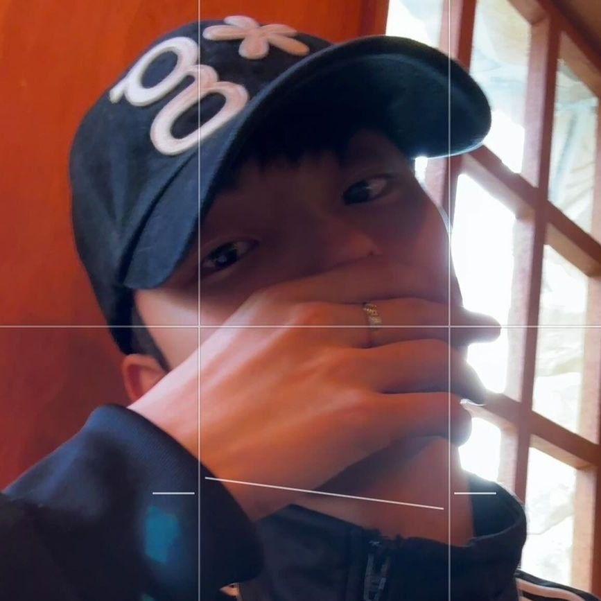
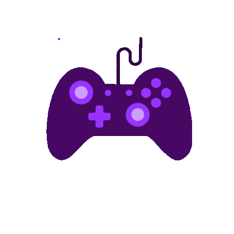
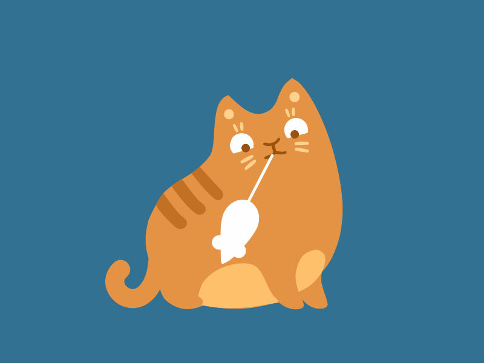
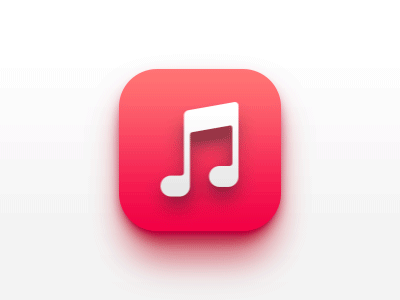

Yvan Aaron Lumauig
Student/Programmer
About Me
Greetings! I'm Yvan Aaron Lumauig, a 19-year-old residing in Angono, Rizal. I'm currently enrolled as a student at URSM pursuing a Bachelor of Science in Computer Engineering. Delving into the realm of web design, I proudly present my inaugural webpage crafted with precision using Visual Studio Code and programming finesse.
My aspiration is to evolve into a proficient student programmer, continually enhancing my skills across various domains. I endeavor to maintain a multifaceted perspective and strike a harmonious balance between my academic pursuits and personal growth, striving to become a better version of myself.
Hobby / Interest

Programming
I have a deep affection for programming, which is why I've opted to pursue a Bachelor of Science in Computer Engineering at UR'S Morong. My aim is to delve deeper into the subject, enhancing both my academic prowess and my skills as a future programmer, all in the pursuit of personal growth and improvement.

Gaming
Gaming is a cherished pastime for me, where I delight in spending my time. It brings me immense joy and serves as a source of happiness. I'm particularly skilled at League of Legends, Valorant, Genshin Impact, and even Clash of Clans on mobile, which I frequently play with my friends.

Cats
I adore cats, and they are my favorite pets. Whenever I have some free time, I enjoy playing with them. Their soft, fluffy fur and calm demeanor make them incredibly endearing to me. Simply watching them lounge around is immensely relaxing and brings me great joy.

Music
I'm a huge fan of music, and K-pop is my absolute favorite genre. I spend a lot of my time listening to it, and I particularly idolize The Boyz. They're not just my favorite artists; they're my idols, and I aspire to be like them one day.